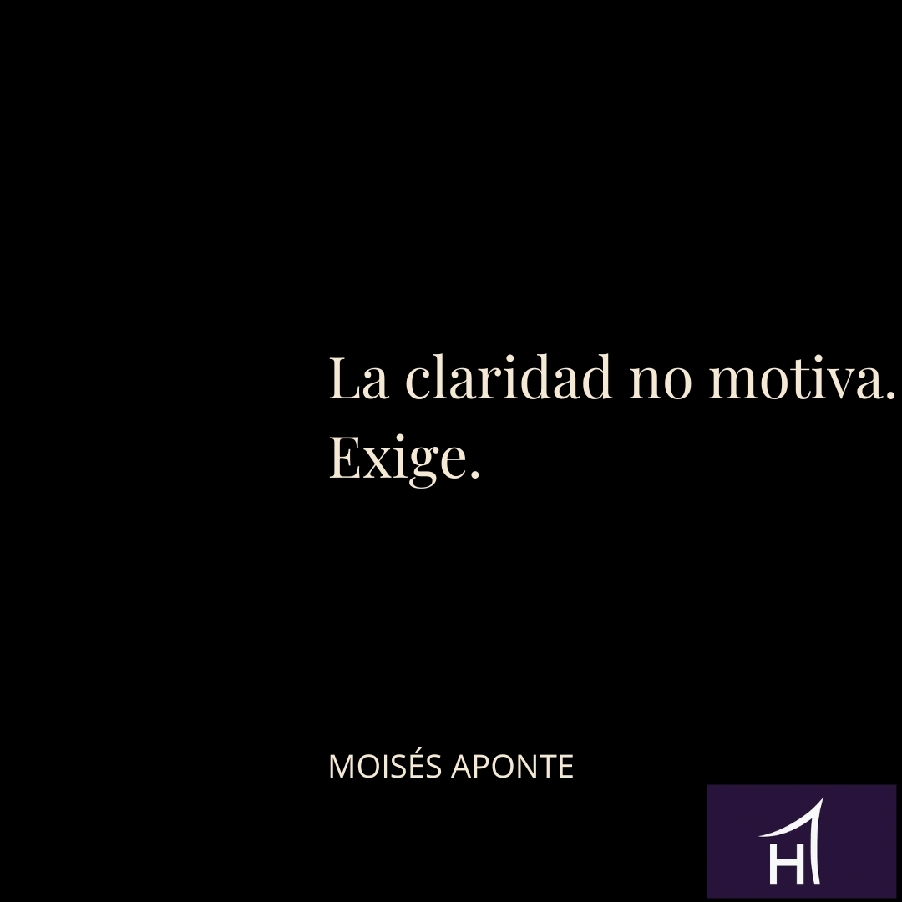

La mayoría cree que la claridad llega para aliviar.
Creen que entender algo debería hacerlos sentir mejor.
No funciona así.
La claridad no calma. **Presiona.**
Cuando una situación se vuelve clara, desaparecen las excusas elegantes. Ya no puedes esconderte detrás del "lo estoy pensando", del "necesito más tiempo" o del "no tengo toda la información". La claridad elimina refugios. Y eso incomoda.
Por eso tantos adultos prefieren la confusión.
La confusión permite seguir igual sin decidir nada.
Parece racional, pero es pasiva.
La falta de claridad rara vez es un problema de información. Es un problema de resistencia. Saber qué hacer implica asumir el coste de hacerlo. Y ese coste suele ser incómodo, repetitivo y poco atractivo. La claridad no añade opciones. **Las elimina.**
Cada decisión clara implica una renuncia.
Renunciar a alternativas, a coartadas, a fantasías.
Por eso duele.
Muchos confunden claridad con consumo: leer más, escuchar más opiniones, analizar más escenarios. Pero acumular información no produce claridad. Produce ruido sofisticado. La claridad aparece cuando reduces, cuando eliges, cuando aceptas pérdidas.
En la vida adulta, la confusión suele ser una forma de postergación. No es que no sepas qué hacer. Es que no quieres asumir las consecuencias de hacerlo. Decidir obliga a actuar. Y actuar obliga a sostener.
La claridad no llega para acompañarte.
Llega para exigirte coherencia.
Ejemplo realista
Una persona con claridad no tiene una agenda perfecta ni una motivación constante. Tiene pocas decisiones claras y las cumple. Sabe a qué hora empieza su día, qué tarea no negocia y qué distracciones elimina. No porque le apetezca, sino porque ya decidió.
Eso es claridad aplicada.
Ejercicio Hathor
Durante las próximas 24 horas, identifica una decisión que ya sabes que debes tomar y has evitado. Elimina una opción. Solo una. No la reemplaces por otra. Sostén esa pérdida.
Recuerda!!!
La claridad no te abraza.
Te coloca frente a ti mismo.
Y te exige vivir a la altura de lo que ya sabes.
